Ventas, inventario y ganancias de tu negocio, explicado paso a paso y con pantallas.
Las capturas usan datos de ejemplo («Tienda Don Pepe»). Edición: octubre de 2026
Contenido
1. Antes de empezar: quién ve qué
2. Entrar, salir y moverse por el sistema
3. Vender
4. Ventas, anulaciones y devoluciones de clientes
5. Productos: crear, editar, fotos e importar desde Excel
6. Inventario: entradas, conteo físico y ajustes
7. Proveedores y devolución de mercancía
8. Panel: cómo va el negocio
9. Configuración
10. Copias de seguridad (¡importante!)
11. Tu cuenta, modo oscuro y uso en el celular
12. Rutina diaria sugerida y problemas frecuentes
1. Antes de empezar
Nivel es el sistema donde registras tus ventas, controlas el inventario y ves cuánto estás ganando. Funciona en el computador del negocio y también en la tablet o el celular (conectados al WiFi del local).
Quién ve qué
Rol
Qué puede hacer
Dueño
Todo: vender, ver todas las ventas, anular, hacer devoluciones, crear y editar productos (con costos y ganancias), inventario, proveedores, panel, configuración y copias de seguridad.
Vendedor/a
Vender, ver sus ventas, consultar productos (sin costos ni ganancias) y el estado del inventario.
Cada persona usa su propio usuario: así se sabe quién hizo cada venta. Los permisos los controla el servidor; aunque alguien intente entrar a una pantalla que no le corresponde, no podrá.
Tres ideas que lo explican todo. (1) El stock de un producto solo cambia con ventas, entradas, devoluciones, ajustes y conteos: nunca se escribe a mano, así siempre se puede explicar por qué hay lo que hay. (2) Una venta ya hecha nunca cambia, aunque después cambie el precio del producto. (3) Todo el dinero se maneja en pesos enteros.
2. Entrar, salir y moverse
Entrar
Abre Nivel (acceso directo del escritorio o la dirección que te dieron en el celular), escribe tu usuario y contraseña y pulsa Entrar.
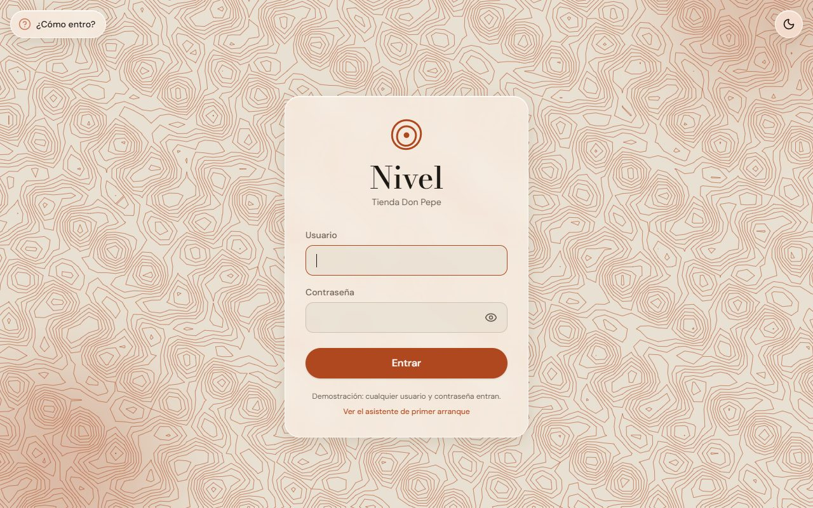
Pantalla de acceso. El ojito muestra u oculta la contraseña. (La frase «Demostración…» solo aparece en la versión de prueba; en el sistema real no está.)
El menú
A la izquierda (o abajo en el celular) están los módulos: Panel, Venta, Ventas, Productos, Inventario, Proveedores y Configuración. Arriba a la derecha, el estado de las copias, el modo claro/oscuro y tu nombre.
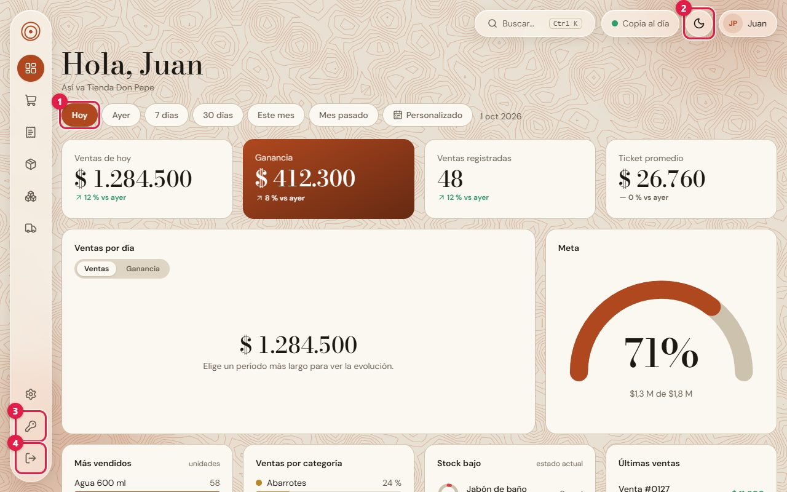
Panel del dueño: 1 períodos, 2 modo claro/oscuro, 3 cambiar mi contraseña, 4 cerrar sesión.
La sesión vence sola después de un tiempo sin uso. Si te pide entrar de nuevo, no pierdes nada de lo ya registrado.
3. Vender
La pantalla Venta es la caja: rápida y pensada para usarse todo el día.
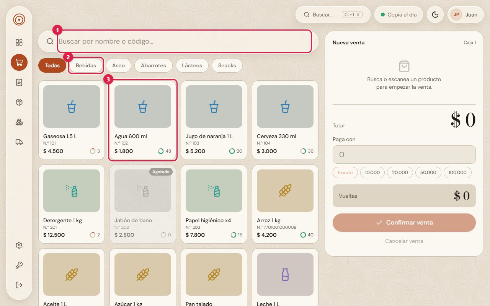
Venta: 1 búsqueda por nombre o código (también sirve el lector de código de barras), 2 categorías, 3 tarjeta de producto con su precio y stock.
Paso a paso
Busca el producto escribiendo parte del nombre, el código o escaneando el código de barras. También puedes filtrar por categoría.
Toca la tarjeta para agregarlo. Cada toque suma una unidad. Los productos agotados aparecen en gris con la etiqueta Agotado.
En el cuadro Nueva venta (a la derecha) ajusta cantidades con + y −, o quita un producto con el bote de basura.
En Paga con escribe cuánto te dieron, o toca un billete rápido 2 (Exacto, 10.000, 20.000…). Verás las Vueltas al instante.
Pulsa Confirmar venta3. El stock baja solo.
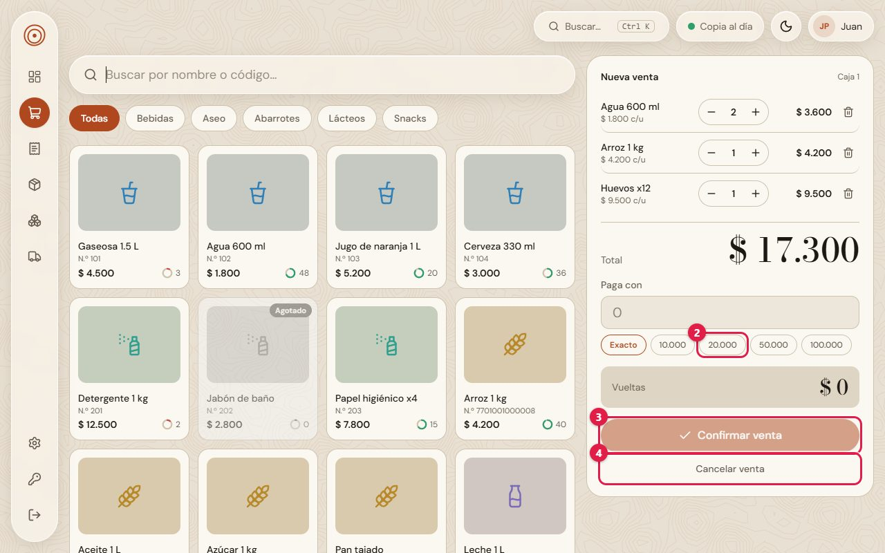
Venta armada: 2 billetes rápidos, 3 confirmar, 4 cancelar toda la venta en curso.
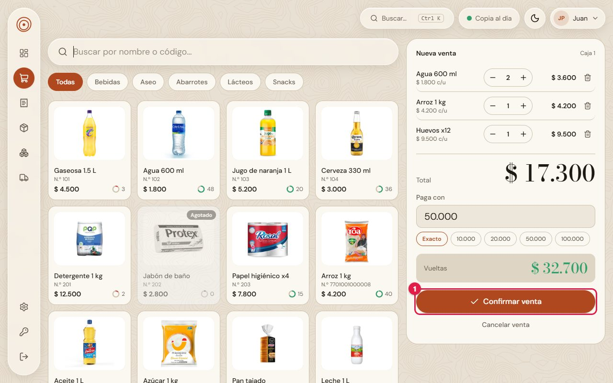
Con el pago escrito, el sistema muestra las vueltas y habilita Confirmar venta.
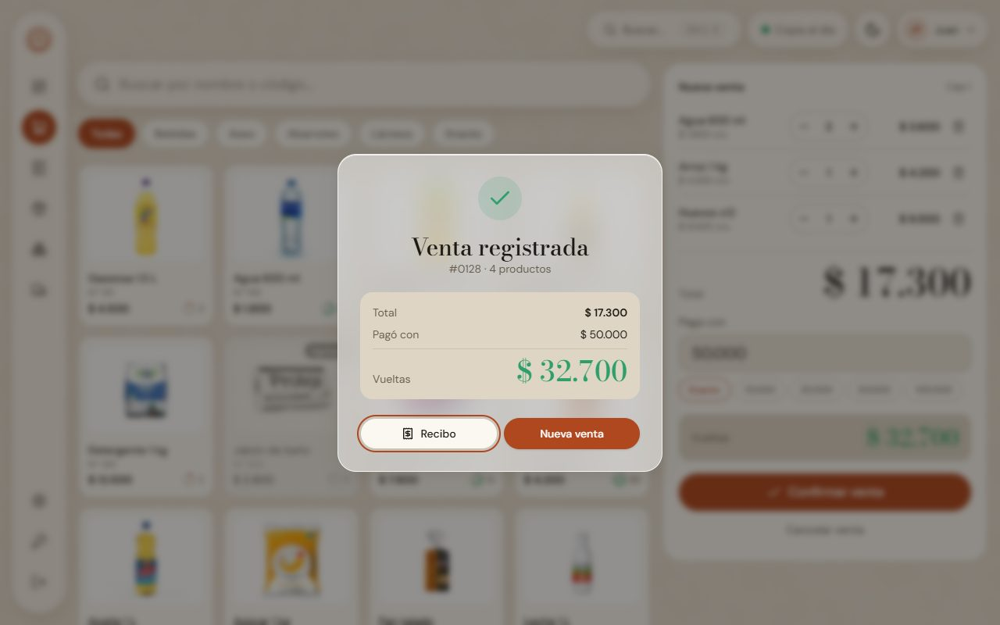
Venta registrada: número de venta, total, con cuánto pagó el cliente y las vueltas. Con Nueva venta sigues con el siguiente cliente.
No pulses dos veces «Confirmar venta». Aunque lo hagas, el sistema registra una sola venta. Si el botón no responde de inmediato, espera un segundo.
Si pides más unidades de las que hay, el sistema te avisa y no deja confirmar. El negocio puede permitir vender «con el stock en cero» desde Configuración. El botón Recibo muestra una vista del recibo; por ahora no se imprime.
Si el pago no alcanza
El botón Confirmar venta no se habilita mientras lo pagado sea menor que el total. No hay forma de cobrar de menos por error.
4. Ventas, anulaciones y devoluciones
En Ventas está el historial. El dueño ve todas las ventas; cada vendedor/a, solo las suyas.
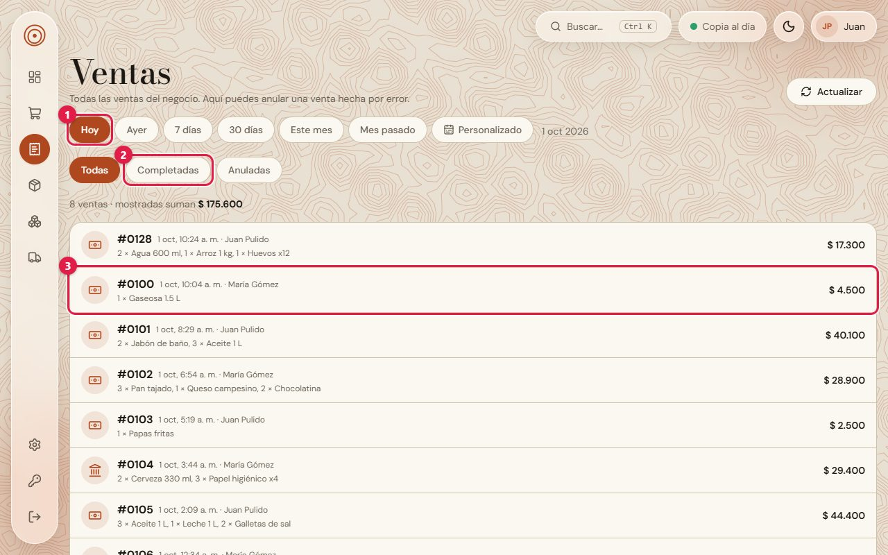
Historial: 1 períodos (hoy, ayer, 7 días, mes…), 2 estado (completadas o anuladas), 3 toca una venta para ver el detalle.
Ver el detalle de una venta
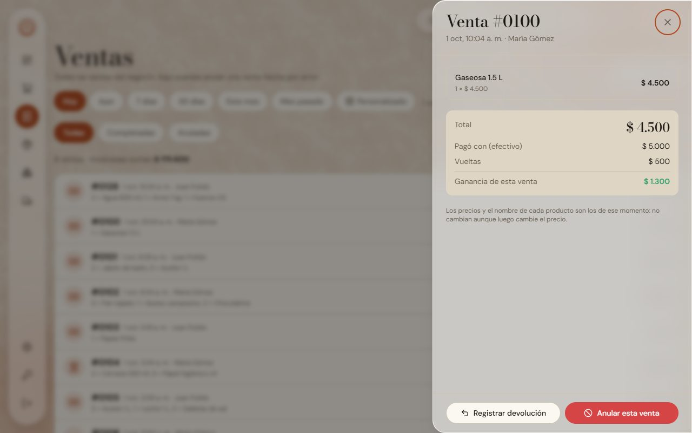
Detalle de la venta: productos, total, pago, vueltas y (solo para el dueño) la ganancia de esa venta. Abajo, Registrar devolución y Anular esta venta.
Los precios y nombres que ves son los de ese momento: no cambian aunque luego cambie el precio del producto.
Anular una venta (solo el dueño)
Úsalo cuando la venta se registró por error (todo está mal). Pulsa Anular esta venta, escribe el motivo y confirma. El stock vuelve y la venta deja de contar en el Panel. Queda el rastro de quién la anuló y por qué.
Devolución de un cliente (solo el dueño)
Úsalo cuando el cliente devuelve parte o todo lo que compró.
Abre la venta y pulsa Registrar devolución.
Elige cuántas unidades de cada producto devuelve (con + y −). Nunca puedes devolver más de lo vendido.
Escribe el motivo (o toca uno de los sugeridos) e indica cómo se le devuelve el dinero: efectivo, transferencia o tarjeta.
El sistema calcula cuánto devolver: siempre al precio al que se vendió, no al de hoy.
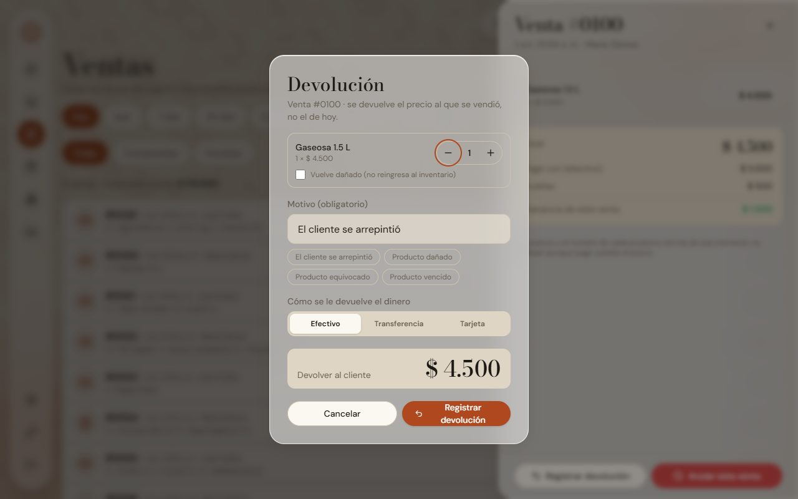
Devolución: unidades, motivo, medio de reembolso y valor a devolver. Si el producto vuelve dañado, se devuelve el dinero pero el producto no entra al inventario.
Una venta con devoluciones ya no se puede anular (se duplicaría el stock); en cambio se sigue devolviendo lo que falte. El Panel descuenta las devoluciones el día en que se devolvió el dinero.
5. Productos
Aquí está todo el catálogo. El dueño ve costos y márgenes; el vendedor, solo nombre, precio y stock.
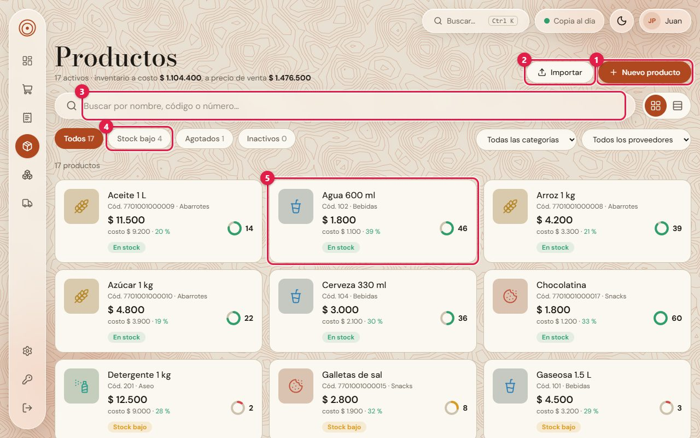
Productos: 1 crear uno nuevo, 2 importar desde Excel, 3 buscar, 4 filtrar por estado del stock, 5 editar un producto.
Crear un producto
Pulsa Nuevo producto. Lo básico es el nombre, la categoría, el costo y el precio. Todo lo demás es opcional:
Campo
Cómo funciona
Nombre
Como quieres verlo en Venta. Ej. «Agua con gas 600 ml».
Código
Opcional. Si lo dejas vacío, el sistema le pone el siguiente número (0001, 0002…). Puedes escribir el tuyo (ej. AGUAGAS) o escanear el código de barras. No admite espacios y no puede repetirse (da igual mayúsculas o minúsculas).
Descripción
Opcional. Sirve para distinguir presentaciones y también para buscar.
Categoría
Elige una o crea una nueva ahí mismo con + Nueva categoría.
Proveedor
Opcional. Sirve para saber a quién pedirle cuando se acabe.
Costo y precio
El sistema muestra al instante cuánto ganas por unidad y tu margen. Si vendes por debajo del costo, te avisa en rojo.
Stock inicial y mínimo
Lo que tienes hoy y el nivel en que quieres que te avise («stock bajo»).
Foto
Opcional. Sube una foto del producto; el sistema la reduce sola para que no pese.
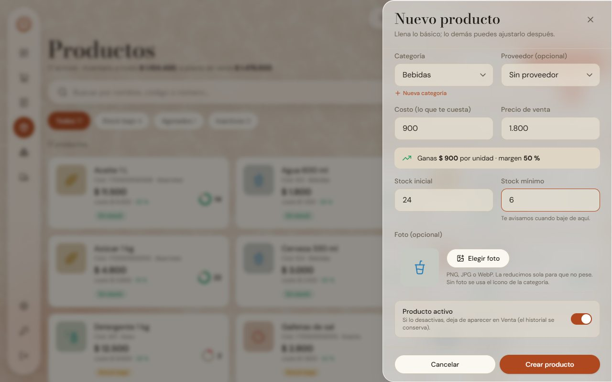
Formulario de producto: 1 código opcional, 2 descripción, 3 crear una categoría nueva sin salir.
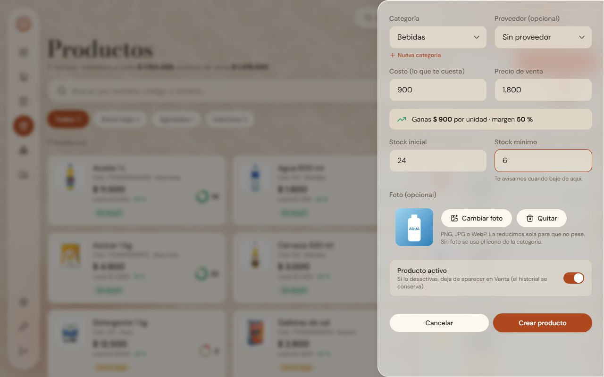
Costo, precio y margen en vivo, stock inicial y mínimo, y la foto del producto con vista previa. 2Crear producto guarda todo.
Editar, desactivar y precios
Editar: toca el lápiz de la tarjeta. Puedes cambiar todo: nombre, código, descripción, categoría, proveedor, costo, precio, stock mínimo y foto (con Cambiar foto o Quitar).
Cambiar un precio o costo: queda en el historial. Las ventas anteriores no cambian.
El stock no se edita aquí: cambia con ventas, entradas, devoluciones y conteos.
Desactivar: apaga Producto activo. Deja de aparecer en Venta, pero su historial se conserva (lo encuentras en el filtro Inactivos).
Importar productos desde Excel o CSV (solo dueño)
Útil para cargar de una vez todo el catálogo. Pulsa Importar y sigue los tres pasos:
Descarga la plantilla y llénala (una fila por producto; trae un ejemplo y las instrucciones). Obligatorios: nombre, categoría, costo y precio.
Sube tu archivo (.xlsx o .csv).
Revisa la vista previa: nada se guarda todavía. Si todo está bien, pulsa Importar N productos.
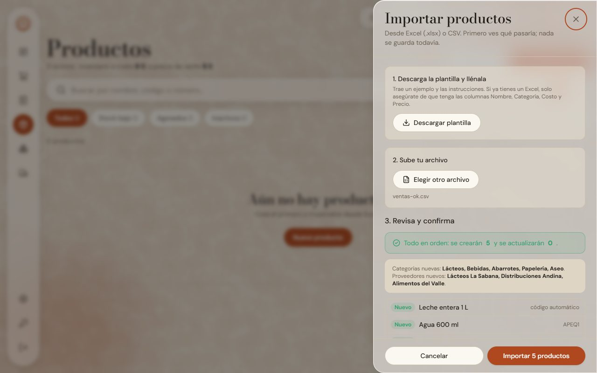
Vista previa de una importación correcta: cuántos productos se crean y cuántos se actualizan, las categorías y proveedores nuevos, y cada fila marcada como «Nuevo» o «Actualiza».
Si el archivo tiene errores, el sistema te dice en qué fila y en qué columna y no deja importar hasta corregirlos (así nunca queda un catálogo a medias).
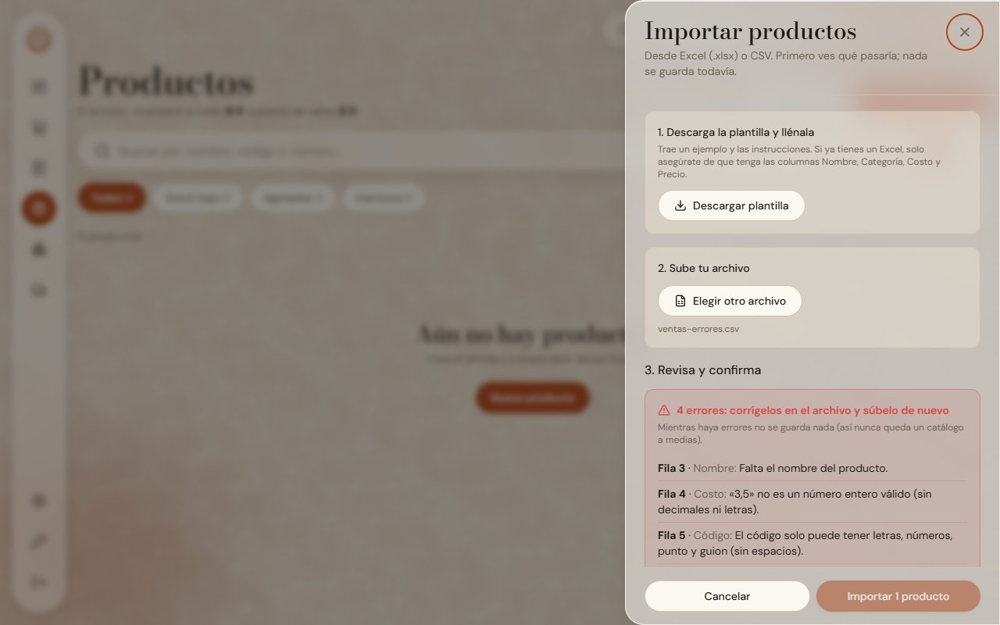
Importación con errores: cada uno indica la fila y la columna. Corrige el archivo y súbelo de nuevo.
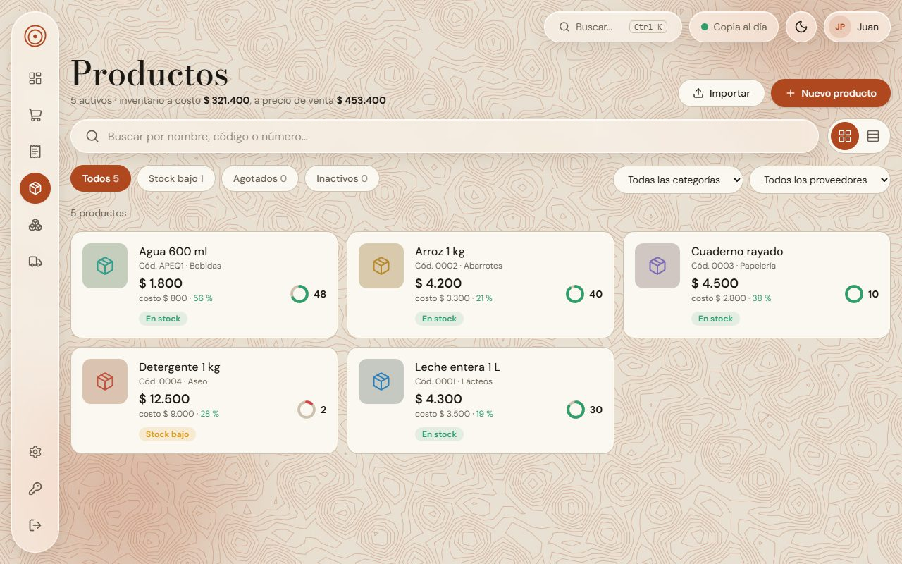
Resultado: los productos ya están en el catálogo, con su stock inicial.
Productos que ya existen: si el código del archivo coincide con uno existente, ese producto se actualiza (nombre, descripción, categoría, proveedor, costo, precio y mínimo). Su stock no se toca: para eso usa el conteo físico. Las categorías y proveedores que no existan se crean solos.
6. Inventario
El inventario muestra el estado del stock, lo más urgente primero, y el libro de movimientos.
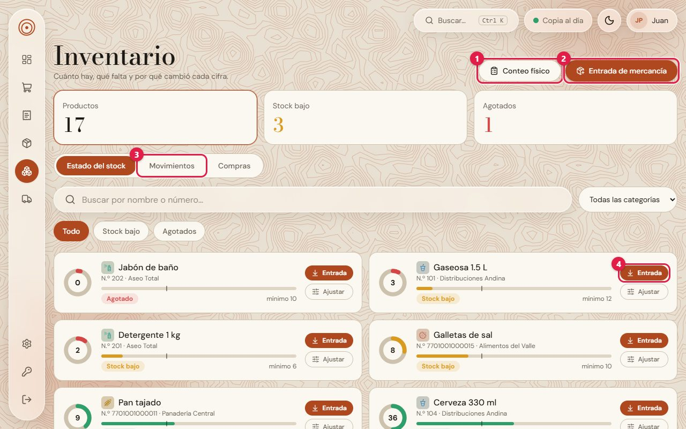
Inventario: 1 conteo físico, 2 entrada de mercancía, 3 libro de movimientos, 4 entrada rápida de un producto.
Entrada de mercancía
Cuando llega un pedido: pulsa Entrada de mercancía, elige el proveedor y agrega los productos con su cantidad y su costo real. Al registrar, el stock sube y, si el costo cambió, el producto se actualiza (queda el rastro).
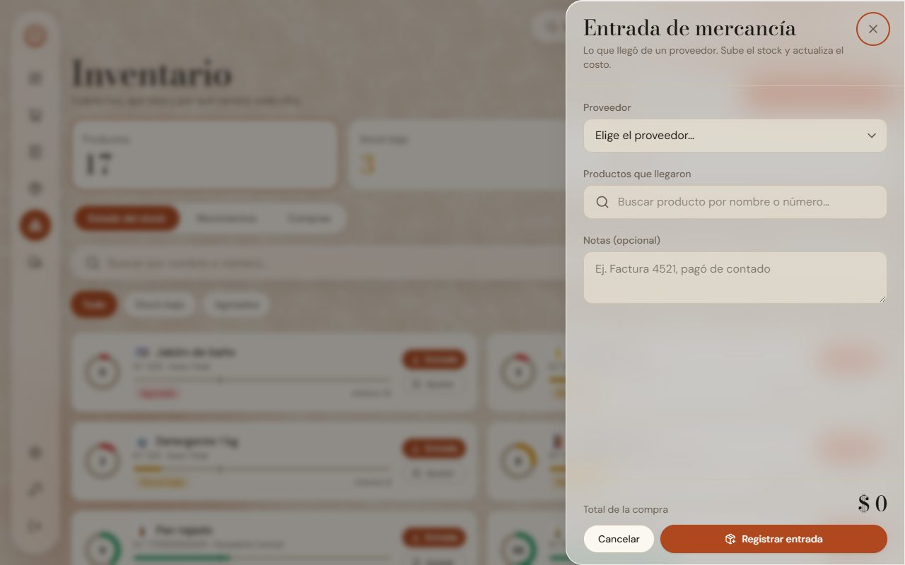
Registrar la entrada de un pedido.
Conteo físico
Sirve para comparar lo que hay en los estantes con lo que dice el sistema.
Pulsa Conteo físico. Aparecen todos los productos con lo que dice el sistema.
Escribe lo que contaste en cada uno. Los que dejes vacíos no se tocan. Puedes buscar o filtrar por categoría.
Pulsa Revisar: verás solo los productos con diferencia («antes → contado»).
Confirma con Aplicar N cambios. Cada diferencia queda en el historial con el motivo.
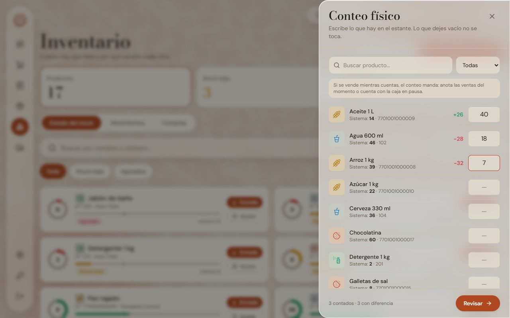
Conteo: la diferencia aparece al lado de cada producto. Solo se aceptan números enteros.
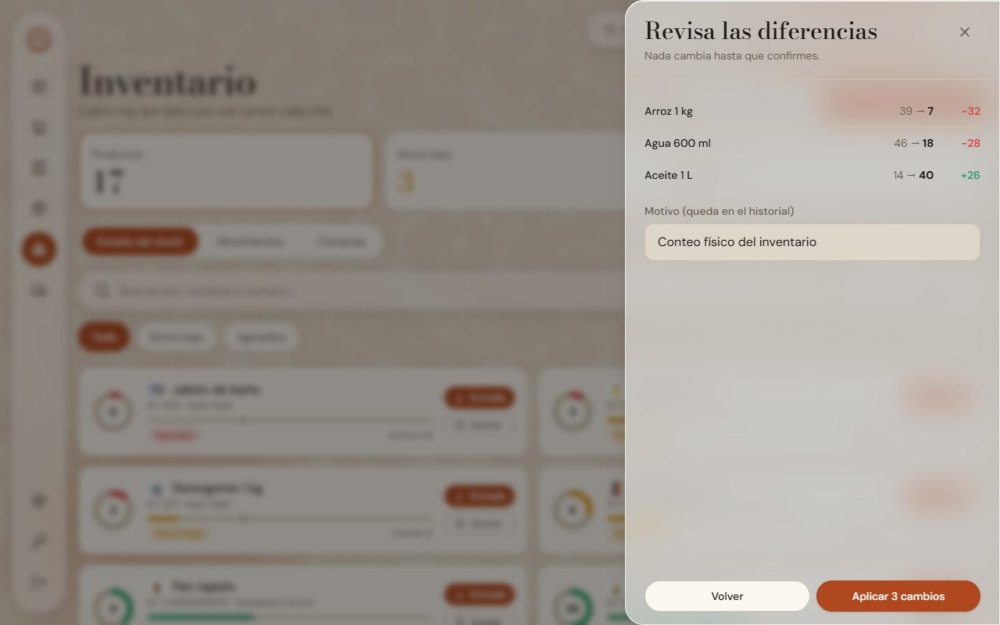
Revisión final antes de aplicar: nada cambia hasta que confirmes.
Si se vende mientras cuentas, manda lo que contaste. Lo ideal es contar con la caja en pausa, o anotar las ventas hechas durante el conteo.
Ajuste de un producto
Con Ajustar (en la tarjeta del producto) registras una pérdida, un daño, un vencimiento o un sobrante, siempre con un motivo.
7. Proveedores
Muestra a quién le compras, qué productos te surte y qué conviene pedirle (lo que está bajo el mínimo).
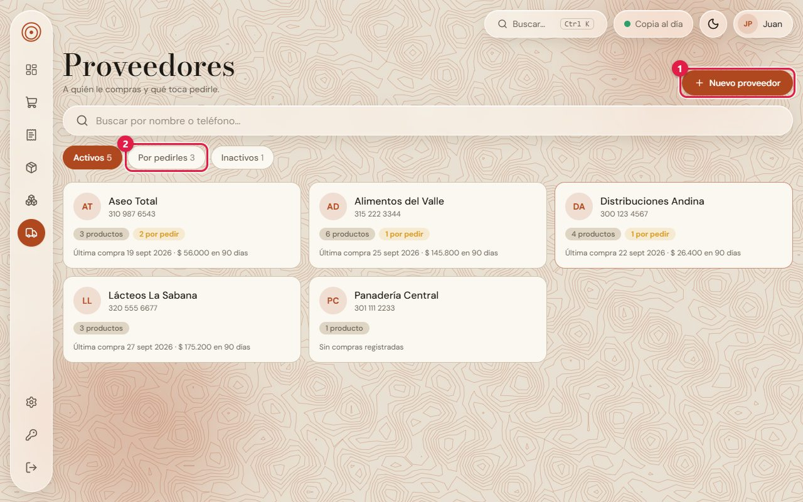
Proveedores: 1 agregar uno nuevo, 2 filtro «Por pedirles» con los que tienen productos por agotarse.
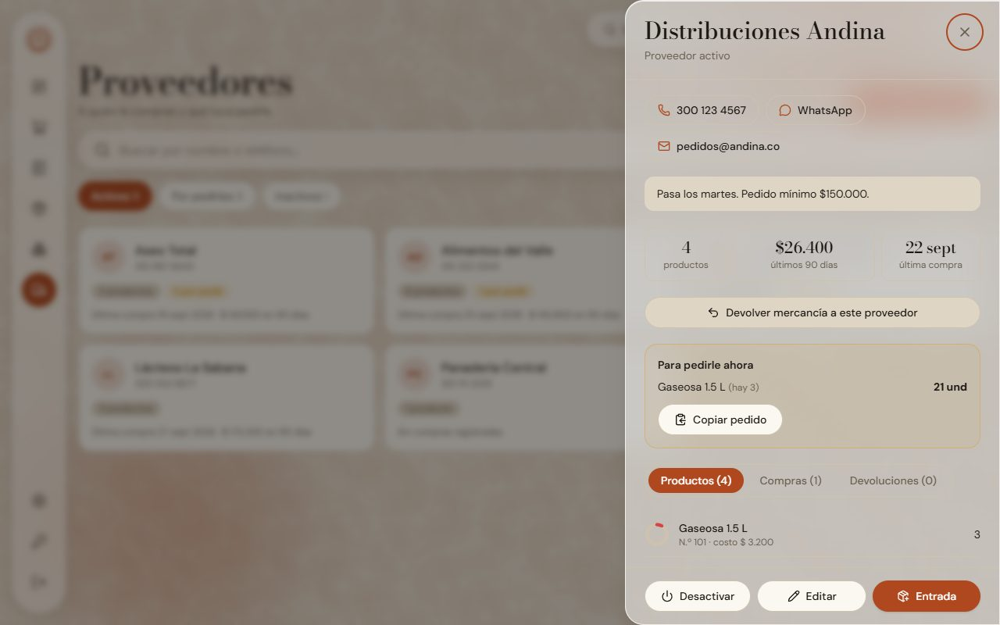
Ficha del proveedor: contacto, notas, sus compras y lo que conviene pedirle. 1Devolver mercancía.
Devolver mercancía a un proveedor
Cuando el proveedor trajo de más, o la mercancía llegó dañada, equivocada o vencida:
En la ficha del proveedor pulsa Devolver mercancía.
Elige la compra de origen (opcional) y los productos con sus cantidades. El sistema no deja devolver más de lo comprado ni más de lo que hay en el inventario.
Indica el motivo y cómo se resuelve: por definir, nota crédito, reembolso o reposición.
El stock baja, y queda registrado cuánto se devolvió (valorado al costo) en la pestaña Devoluciones del proveedor.
8. Panel
Solo para el dueño. Es la primera pantalla al entrar (Figura 2) y responde: «¿cómo va el negocio?».
Tarjetas: ventas, ganancia, número de ventas y ticket promedio, comparados con el período anterior (flechas verdes o rojas).
Períodos: hoy, ayer, 7 días, 30 días, este mes, mes pasado o fechas a tu medida (Personalizado).
Gráficas: ventas o ganancia por día, avance hacia la meta diaria, productos más vendidos y ventas por categoría.
Stock bajo y últimas ventas, para actuar rápido.
Las cifras ya descuentan las devoluciones y no cuentan las ventas anuladas. Los días se cuentan en la hora de Colombia.
9. Configuración
Solo el dueño la ve. Adapta el sistema al negocio.
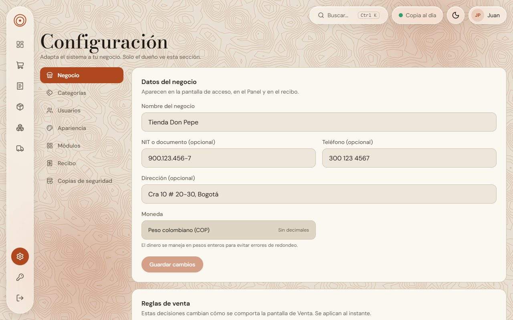
Negocio: nombre, NIT, dirección, teléfono, meta diaria y si se permite vender con el stock en cero.
Categorías
Crea, renombra, cambia el color o desactiva categorías. Una categoría desactivada no se ofrece al crear productos nuevos (los que ya la usan la conservan). Nunca se borran, para que el historial siempre se entienda. No puede haber dos con el mismo nombre (aunque cambien las mayúsculas).
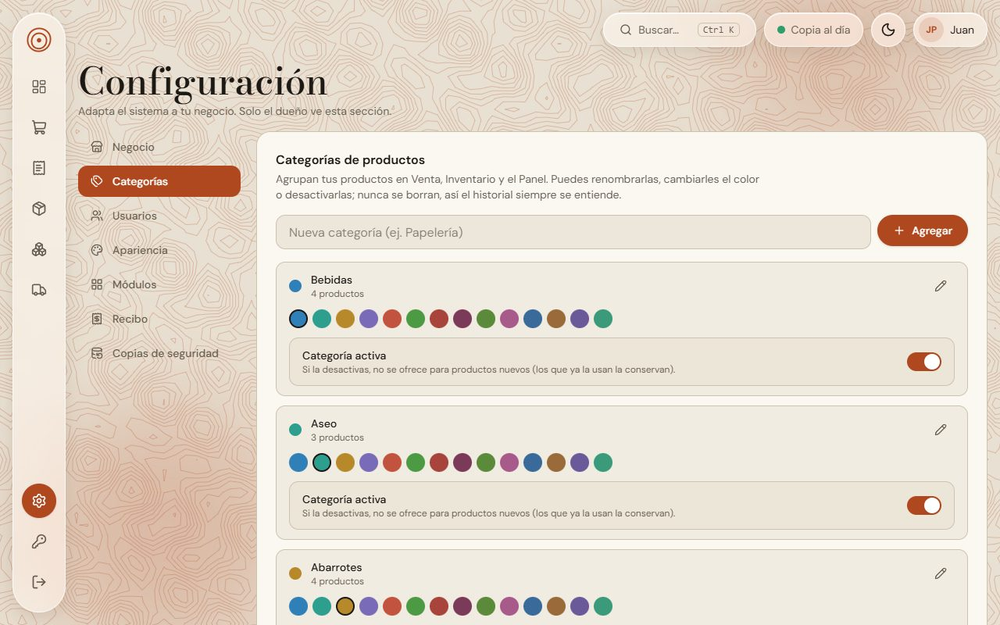
Categorías: nombre, color y activa/desactivada.
Usuarios
Crea usuarios (dueño o vendedor), desactívalos o restablece su contraseña. Un usuario desactivado pierde el acceso al instante. El sistema nunca deja al negocio sin dueño.
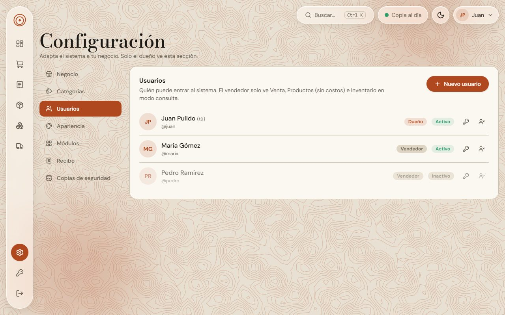
Usuarios del negocio y su estado.
Apariencia
Elige el color principal, el patrón del fondo y su intensidad. Los cambios se ven al instante y se guardan.
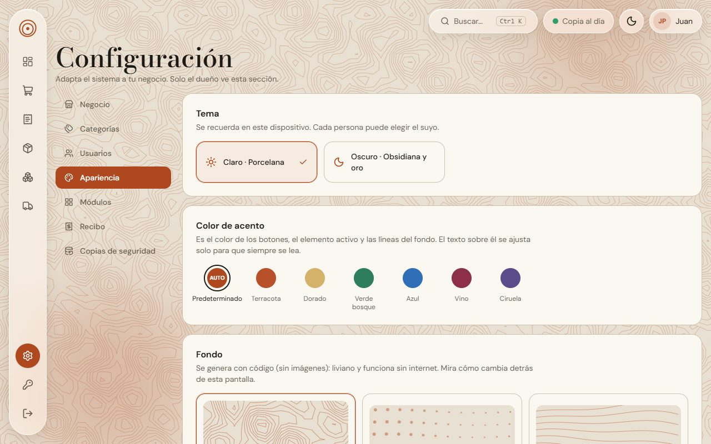
Apariencia: color de acento y patrón de fondo.
10. Copias de seguridad
Es lo más importante para dormir tranquilo: si el computador se daña, con una copia recuperas todo (productos, ventas, inventario, usuarios, ajustes y fotos).
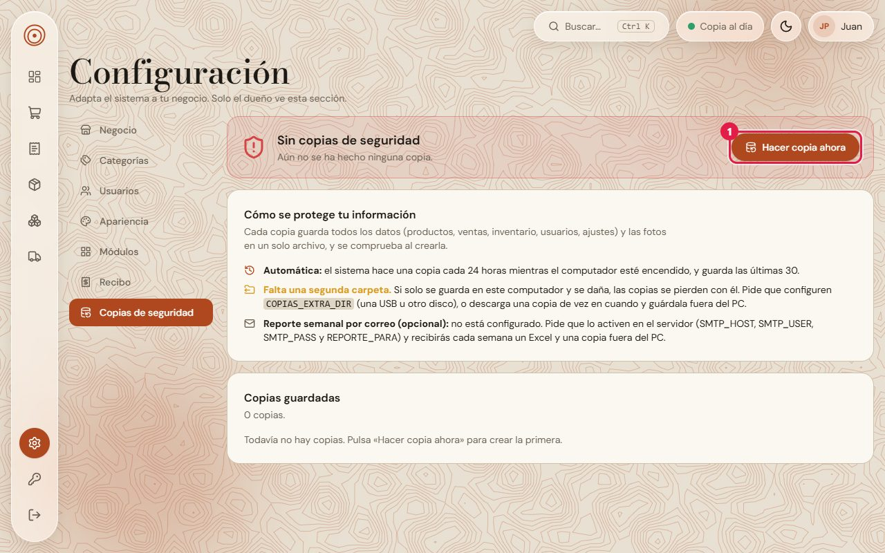
Copias de seguridad: el semáforo indica si hay una copia reciente. 1Hacer copia ahora.
Automática: el sistema hace una copia cada 24 horas mientras el computador esté encendido y guarda las últimas 30.
Segunda carpeta: una copia en el mismo disco se pierde si el disco se daña. Quien instala el sistema puede configurar otra carpeta (una USB u otro disco) donde se repite cada copia.
Reporte semanal por correo (opcional): cada 7 días llega un Excel con las ventas y el inventario, y la copia de seguridad adjunta, así tienes una copia fuera del computador.
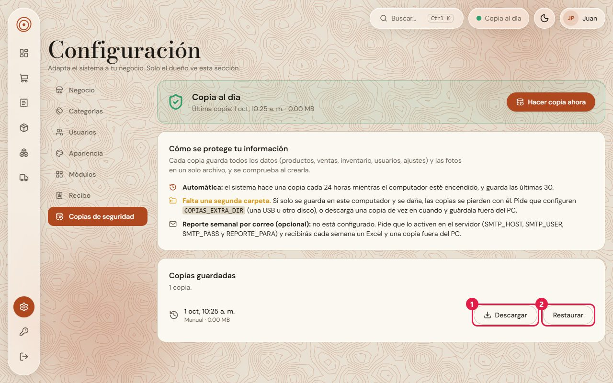
Lista de copias: 1Descargar (guárdala en una USB), 2Restaurar.
Restaurar una copia
Cuidado: restaurar deja el sistema como estaba cuando se hizo esa copia. Todo lo registrado después (ventas, entradas, cambios) se pierde. Hazlo solo si es necesario y, si puedes, con ayuda de quien instaló el sistema.
Pulsa Restaurar en la copia elegida y escribe la palabra RESTAURAR para confirmar. Antes de reemplazar nada, el sistema guarda una copia «Antes de restaurar» del estado actual, por si te arrepientes.
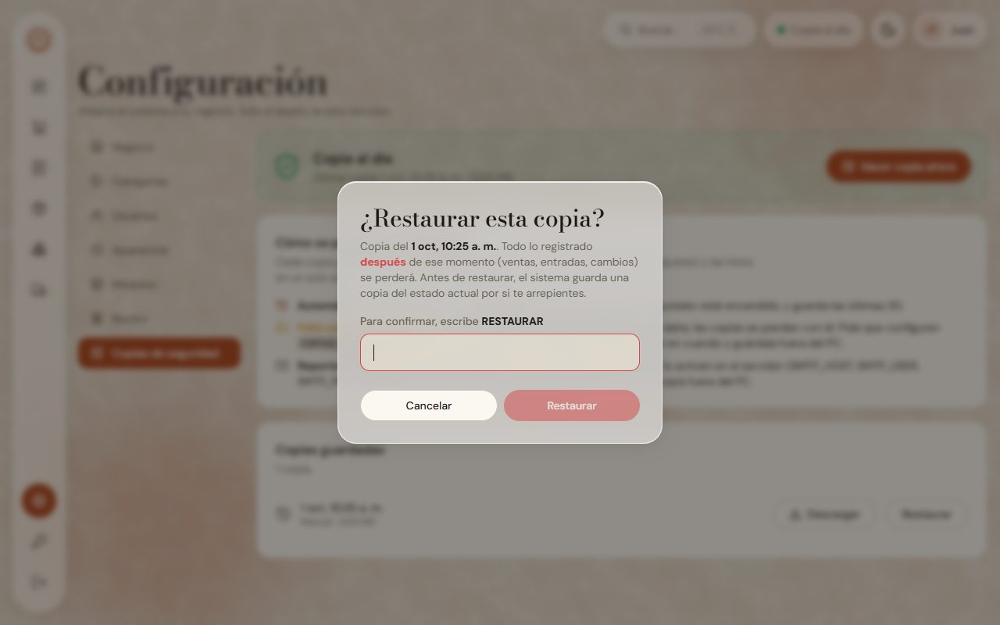
Confirmación de restauración: hay que escribir la palabra para continuar.
11. Tu cuenta, modo oscuro y celular
Cambiar mi contraseña
Toca el ícono de la llave. Escribe tu contraseña actual, la nueva (mínimo 8 caracteres; una frase larga es mejor que una clave corta) y repítela. El medidor te dice qué tan fuerte es.
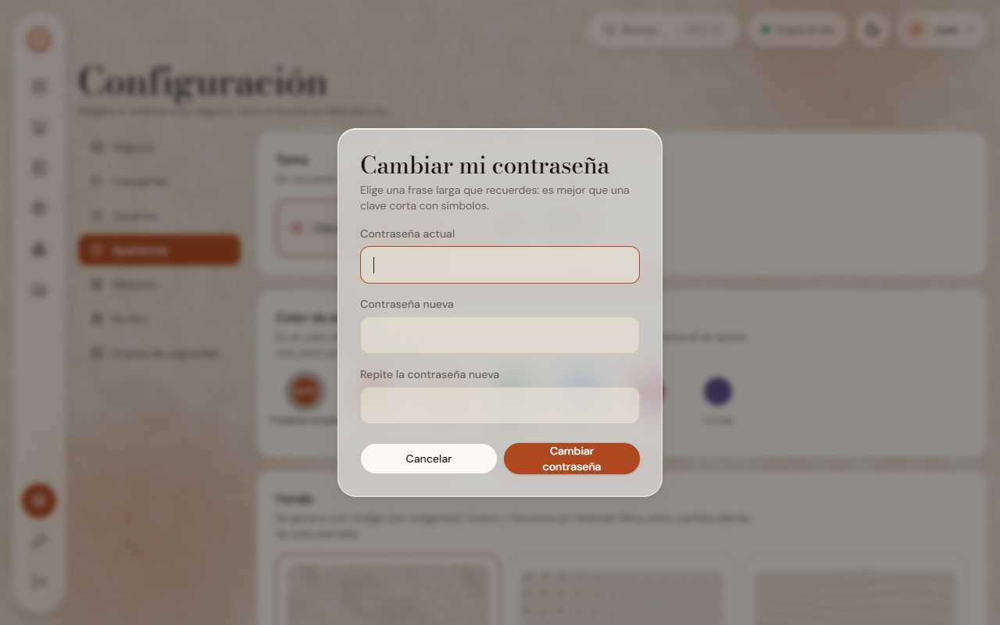
Cambiar mi contraseña.
Modo claro y oscuro
El botón de la luna/sol (arriba a la derecha) alterna entre modo claro y oscuro; el sistema recuerda tu elección. El oscuro es cómodo en lugares con poca luz.
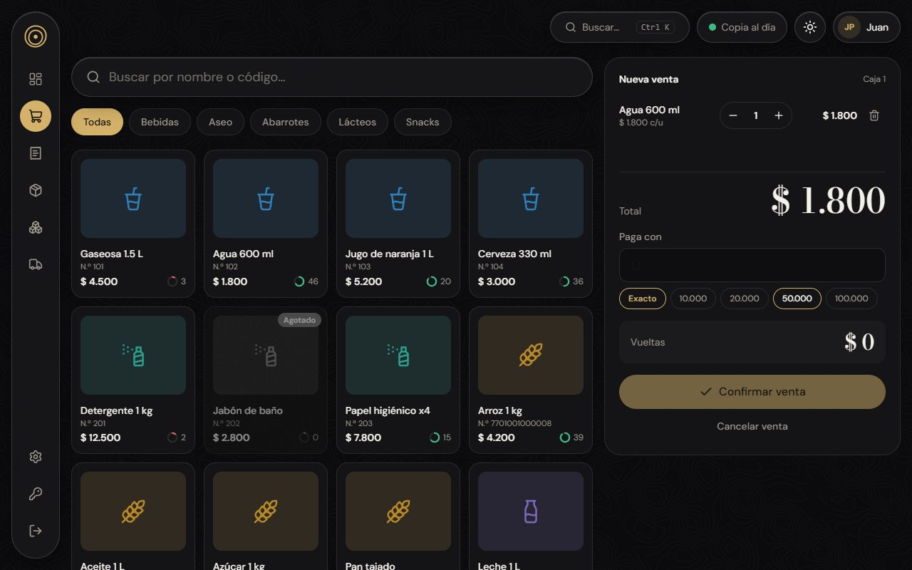
La pantalla de Venta en modo oscuro.
En el celular y la tablet
Abre la dirección del sistema en el navegador (te la da quien lo instaló; el celular debe estar en el WiFi del negocio). El menú pasa a una barra inferior y la venta se arma igual que en el computador.
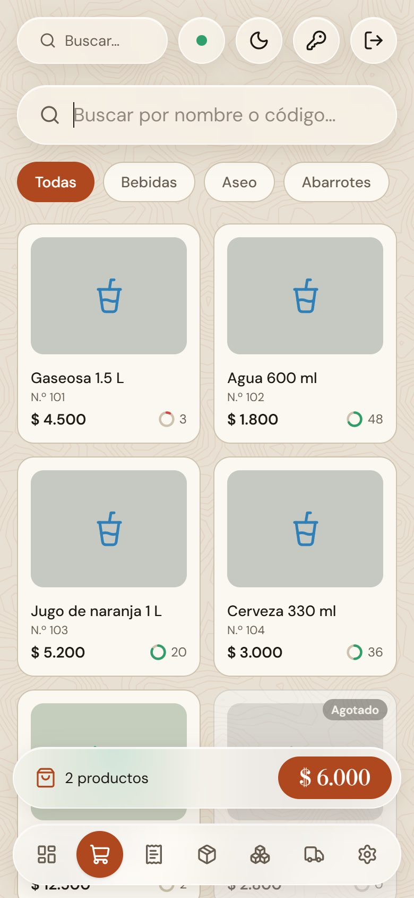
Venta
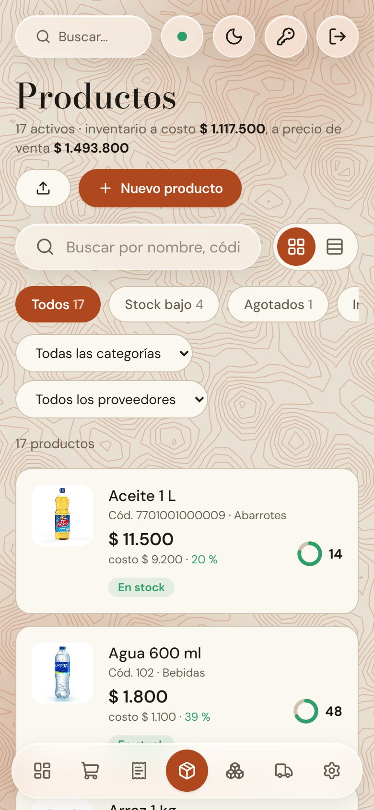
Productos
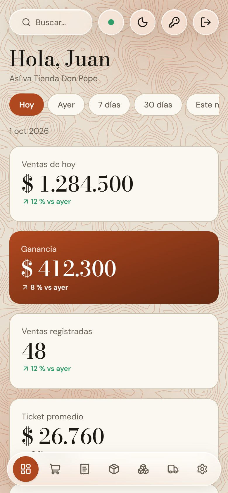
Panel
Ícono en la pantalla de inicio: en Android (Chrome) menú ⋮ → Agregar a la pantalla de inicio; en iPhone (Safari) Compartir → Agregar a inicio. Se abre a pantalla completa, como una app.
12. Rutina diaria y problemas frecuentes
Rutina sugerida
Cuándo
Qué hacer
Al abrir
Abrir Nivel. Revisar en Inventario qué está agotado o bajo y si llegaron pedidos (registrarlos como Entrada).
Durante el día
Registrar cada venta en Venta. Si hay un error, anular o devolver desde Ventas (el dueño).
Al cerrar
Mirar el Panel (ventas y ganancia del día) y confirmar que el semáforo de copias esté verde.
Cada mes (o cuando quieras)
Un conteo físico para cuadrar el inventario. Descargar una copia y guardarla fuera del computador.
Problemas frecuentes
Qué pasa
Qué hacer
«No se pudo conectar con el servidor»
El computador del negocio está apagado o se cerró la ventana Nivel · Servidor. Abre «Nivel» de nuevo.
«Sesión vencida»
Vuelve a entrar con tu usuario. No se pierde nada.
Un producto no aparece en Venta
Puede estar desactivado (mira el filtro Inactivos en Productos) o estar buscando con otro nombre. También puede estar agotado.
No me deja confirmar la venta
El pago es menor que el total, o no alcanza el stock de algún producto.
«Ya existe un producto con ese código»
Cada código es único (aunque cambien mayúsculas). Usa otro, o déjalo vacío para que el sistema lo asigne.
Olvidé mi contraseña
Pídele al dueño que la restablezca en Configuración → Usuarios. Si es el dueño quien la olvidó, avisa a quien instaló el sistema.
Las cifras no me cuadran
Anota la hora y el producto y avisa a quien instaló el sistema: hay una revisión automática que comprueba que el stock y las ventas cuadren.
¿Dudas o ideas para mejorar el sistema? Anótalas: el sistema está hecho para adaptarse al negocio.